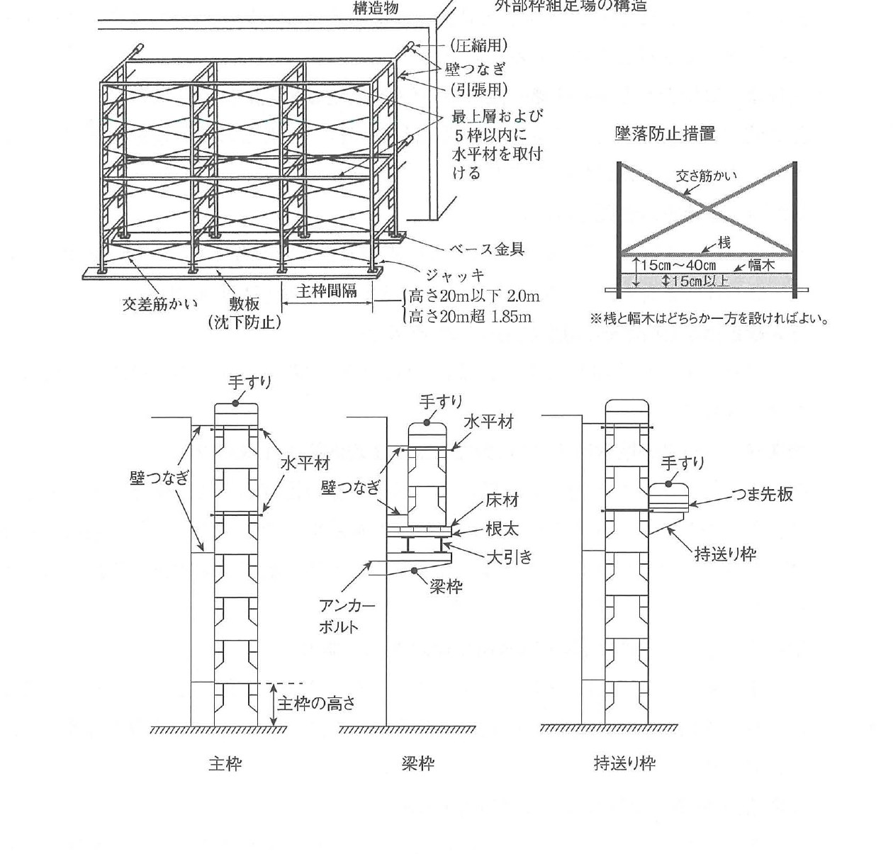
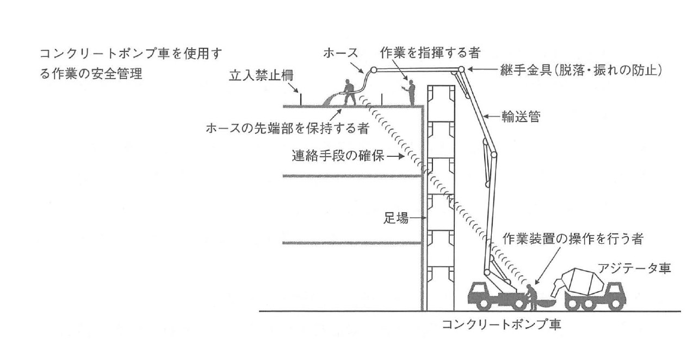
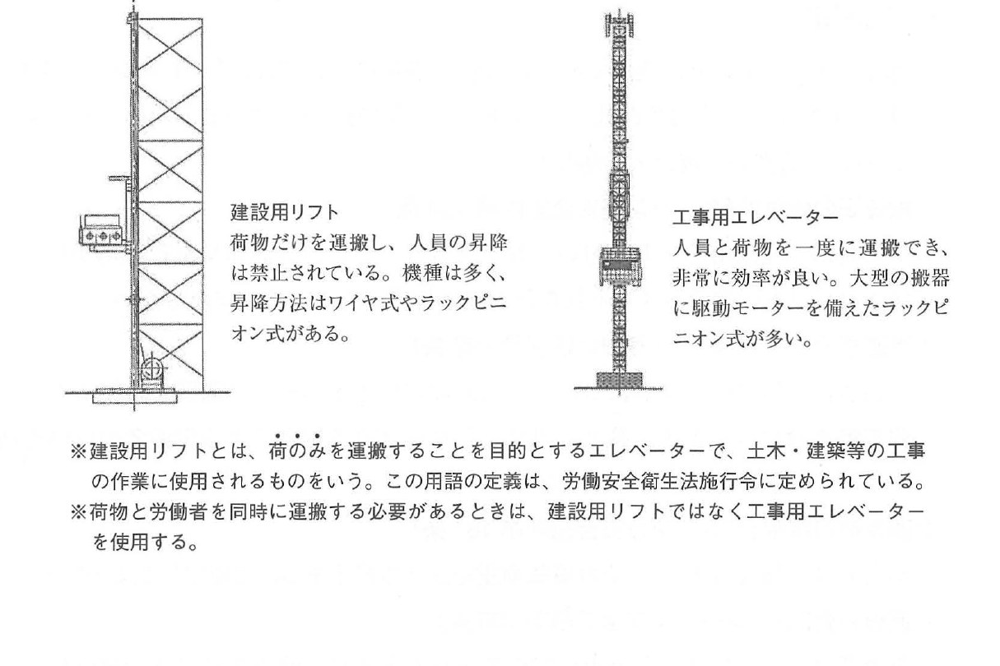

原文
令和2年度 問題2 施工計画（仮設物の安全管理）
次の設問1から設問3の設備又は機械を安全に使用するための留意事項を、それぞれ2つ具体的に記述しなさい。
ただし、解答はそれぞれ異なる内容の記述とし、保護帽や要求性能墜落制止用器具などの保護具の使用、気象条件、資格、免許及び届出に関する記述は除くものとする。
また、使用資機材に不良品はないものとする。
- 設問1 外部枠組足場
- 設問2 コンクリートポンプ車
- 設問3 建設用リフト
次の設問1から設問3の設備又は機械を安全に使用するための留意事項を、それぞれ2つ具体的に記述しなさい。
ただし、解答はそれぞれ異なる内容の記述とし、保護帽や要求性能墜落制止用器具などの保護具の使用、気象条件、資格、免許及び届出に関する記述は除くものとする。
また、使用資機材に不良品はないものとする。
Đối với từng thiết bị hoặc máy móc, hãy trình bày các điểm cần lưu ý để sử dụng an toàn, mỗi đối tượng gồm 2 nội dung cụ thể.
Tuy nhiên, các câu trả lời phải có nội dung khác nhau. Không được trình bày về việc sử dụng phương tiện bảo hộ như mũ bảo hộ hoặc thiết bị chống rơi đáp ứng tính năng yêu cầu, điều kiện thời tiết, tư cách hoặc chứng chỉ, giấy phép và thủ tục khai báo.
Ngoài ra, giả định rằng máy móc, thiết bị và vật tư sử dụng không có sản phẩm lỗi.
設問1外部枠組足場を安全に使用するための留意事項
① 外部枠組足場の作業床のうち、墜落により労働者に危険を及ぼすおそれのある箇所には、交差筋かいおよび高さ15cm以上の幅木を設ける。
② 外部枠組足場の作業床の床材は、転位または脱落しないように、2以上の支持物に取り付ける。
出典：労働安全衛生規則
設問2コンクリートポンプ車を安全に使用するための留意事項
① コンクリート等の吹出しにより、労働者に危険が生じるおそれのある箇所には、労働者を立ち入らせないように措置する。
② 輸送管の組立て・解体を行うときは、事業者が作業の方法・手順を定め、労働者に周知させ、作業を指揮する者を指名して、その直接の指揮の下に作業を行わせる。
出典：労働安全衛生規則
設問3建設用リフトを安全に使用するための留意事項
① 建設用リフトに、その積載荷重を超える荷重をかけたり、その搬器に労働者を乗せたりしないようにする。
② 建設用リフトを用いて作業を行うときは、建設用リフトの運転について、事業者が一定の合図を定め、合図を行う者を指名し、その者に合図を行わせる。
出典：クレーン等安全規則
Câu 1Các điểm cần lưu ý để sử dụng giàn giáo khung bên ngoài an toàn
① Tại những vị trí trên sàn công tác của giàn giáo khung bên ngoài có nguy cơ gây nguy hiểm cho người lao động do rơi ngã, phải lắp giằng chéo（交差筋かい） và tấm chắn chân（幅木） cao từ 15 cm trở lên.
② Vật liệu làm sàn của sàn công tác phải được gắn vào từ 2 bộ phận đỡ（支持物） trở lên, để không bị dịch chuyển hoặc rơi tuột.
Nguồn: Quy tắc An toàn và Vệ sinh Lao động（労働安全衛生規則）
Câu 2Các điểm cần lưu ý để sử dụng xe bơm bê tông an toàn
① Tại khu vực có nguy cơ gây nguy hiểm cho người lao động do bê tông hoặc vật liệu tương tự phun bật ra, phải thực hiện biện pháp không cho người lao động đi vào khu vực đó.
② Khi lắp ráp hoặc tháo dỡ đường ống vận chuyển, người sử dụng lao động phải quy định phương pháp và trình tự công việc, phổ biến cho người lao động, chỉ định người chỉ huy công việc và thực hiện công việc dưới sự chỉ huy trực tiếp của người đó.
Nguồn: Quy tắc An toàn và Vệ sinh Lao động（労働安全衛生規則）
Câu 3Các điểm cần lưu ý để sử dụng vận thăng xây dựng an toàn
① Không được đặt lên vận thăng xây dựng tải trọng vượt quá tải trọng cho phép và không được cho người lao động lên lồng vận chuyển.
② Khi sử dụng vận thăng xây dựng, người sử dụng lao động phải quy định một tín hiệu thống nhất, chỉ định người thực hiện tín hiệu và yêu cầu người được chỉ định thực hiện tín hiệu đó.
Nguồn: Quy tắc An toàn đối với Cần trục và các thiết bị tương tự（クレーン等安全規則）
設備・機械を安全に使用するための留意事項に関することを記述する問題では、労働安全衛生規則やクレーン等安全規則の規定から2つの事項を選択して記述することが望ましい。
その際には、問題文にある「～に関する記述は除く」等の解答として記述してはならない事項を選択しないように注意する必要がある。
Đối với dạng câu hỏi yêu cầu trình bày các điểm cần lưu ý để sử dụng thiết bị, máy móc an toàn, nên chọn 2 nội dung từ Quy tắc An toàn và Vệ sinh Lao động hoặc Quy tắc An toàn đối với Cần trục và các thiết bị tương tự để viết đáp án.
Khi đó, phải chú ý không chọn những nội dung mà đề bài đã quy định là không được phép sử dụng làm đáp án, chẳng hạn các nội dung nằm trong phần “không được trình bày về...”.
Biện pháp an toàn có thể đúng về thực tế nhưng vẫn không được tính nếu thuộc nhóm mà đề bài loại trừ. Trước khi chọn đáp án, phải đối chiếu trực tiếp với câu “～に関する記述は除く”.
外部枠組足場を安全に使用するための留意事項については、「労働安全衛生規則」の「足場の作業床」（第563条）および「鋼管足場」（第570条・第571条）において、次のように定められている。（条文から外部枠組足場に関する部分を抜粋・一部改変）
① 足場の作業床（労働安全衛生規則第563条）
事業者は、足場における高さ2m以上の作業場所には、作業床を設けなければならない。
② 作業床の寸法（労働安全衛生規則第563条）
作業床の幅・床材間の隙間・床材と建地との隙間は、次に定めるところによること。
③ 足場用墜落防止設備（労働安全衛生規則第563条）
墜落により労働者に危険を及ぼすおそれのある枠組足場の箇所には、次のいずれかの設備（丈夫な構造の設備であって、たわみが生ずるおそれがなく、かつ、著しい損傷・変形・腐食がないものに限る）を設ける。
④ 作業床の支持物（労働安全衛生規則第563条）
腕木・布・梁・脚立・その他作業床の支持物は、これにかかる荷重によって破壊するおそれのないものを使用すること。その床材は、転位または脱落しないように2以上の支持物に取り付ける。
⑤ 鋼管足場の脚部（労働安全衛生規則第570条）
鋼管足場の脚部には、足場の滑動または沈下を防止するため、ベース金具を用い、かつ、敷板・敷角等を用い、根がらみを設ける等の措置を講じる。
⑥ 壁つなぎまたは控えの間隔（労働安全衛生規則第570条）
高さが5m以上の枠組足場には、次に定めるところにより、壁つなぎまたは控えを設ける。
Các điểm cần lưu ý để sử dụng giàn giáo khung bên ngoài an toàn được quy định trong Điều 563 “Sàn công tác của giàn giáo” và Điều 570, Điều 571 “Giàn giáo ống thép” của Quy tắc An toàn và Vệ sinh Lao động. Nội dung dưới đây được trích phần liên quan đến giàn giáo khung bên ngoài và có điều chỉnh một phần.
① Sàn công tác của giàn giáo, Điều 563
Người sử dụng lao động phải bố trí sàn công tác tại vị trí làm việc trên giàn giáo có độ cao từ 2 m trở lên.
② Kích thước sàn công tác, Điều 563
Chiều rộng sàn công tác, khe hở giữa các tấm sàn và khe hở giữa tấm sàn với cột đứng của giàn giáo phải đáp ứng các quy định sau:
③ Thiết bị phòng chống rơi ngã cho giàn giáo, Điều 563
Tại vị trí trên giàn giáo khung có nguy cơ gây nguy hiểm cho người lao động do rơi ngã, phải bố trí một trong các loại thiết bị dưới đây. Thiết bị phải có kết cấu chắc chắn, không có nguy cơ bị võng và không có hư hỏng, biến dạng hoặc ăn mòn nghiêm trọng.
④ Bộ phận đỡ sàn công tác, Điều 563
Các bộ phận đỡ sàn công tác như 腕木, 布, dầm, thang chữ A và các bộ phận đỡ khác phải là loại không có nguy cơ bị phá hoại bởi tải trọng tác dụng lên chúng. Vật liệu sàn phải được gắn vào từ 2 bộ phận đỡ trở lên để không bị dịch chuyển hoặc rơi tuột.
⑤ Chân giàn giáo ống thép, Điều 570
Để ngăn giàn giáo ống thép bị trượt hoặc lún, tại chân giàn giáo phải áp dụng đế chân（ベース金具）+ ván kê hoặc thanh gỗ kê（敷板・敷角）+ giằng chân（根がらみ）.
⑥ Khoảng cách liên kết tường hoặc thanh chống, Điều 570
Đối với giàn giáo khung có chiều cao từ 5 m trở lên, phải bố trí liên kết tường（壁つなぎ）hoặc thanh chống（控え）.
⑦ 枠組足場の水平材（労働安全衛生規則第571条）
鋼管を用いて構成される枠組足場には、最上層および5層以内ごとに水平材を設ける。
⑧ 枠組足場の横振れの防止（労働安全衛生規則第571条）
梁枠および持送り枠は、水平筋かい・その他によって横振れを防止する措置を講じる。
⑨ 枠組足場の主枠（労働安全衛生規則第571条）
高さ20mを超えるときや重量物の積載を伴う作業を行うときは、使用する主枠は、高さ2m以下のものとし、かつ、主枠間の間隔は1.85m以下とする。
⑦ Thanh ngang của giàn giáo khung, Điều 571
Đối với giàn giáo khung cấu tạo bằng ống thép, phải bố trí thanh ngang（水平材）tại tầng trên cùng và trong phạm vi mỗi 5 tầng.
⑧ Phòng ngừa dao động ngang của giàn giáo khung, Điều 571
Đối với khung dầm（梁枠）và khung công xôn（持送り枠）, phải thực hiện biện pháp chống dao động ngang bằng giằng ngang（水平筋かい）hoặc biện pháp khác.
⑨ Khung chính của giàn giáo khung, Điều 571
Khi chiều cao giàn giáo vượt quá 20 m hoặc thực hiện công việc có xếp tải vật nặng, khung chính（主枠） phải có chiều cao không quá 2 m và khoảng cách giữa các khung chính phải không quá 1,85 m.

| Đối tượng / parameter | Quy định |
|---|---|
| Vị trí phải bố trí sàn công tác | Độ cao ≥ 2 m |
| Chiều rộng sàn công tác | ≥ 40 cm |
| Khe giữa các tấm sàn | ≤ 3 cm |
| Khe giữa tấm sàn và 建地 | < 12 cm |
| 桟 / 幅木 trong cấu tạo chống rơi | 桟 15-40 cm / 幅木 ≥ 15 cm |
| Số bộ phận đỡ giữ vật liệu sàn | ≥ 2 |
| Điều kiện phải bố trí 壁つなぎ hoặc 控え | Chiều cao ≥ 5 m |
| Khoảng cách 壁つなぎ / 控え | Đứng ≤ 9 m / ngang ≤ 8 m |
| Khoảng cách thanh kéo - thanh nén | ≤ 1 m |
| 水平材 | Tầng trên cùng và trong phạm vi mỗi 5 tầng |
| Cao > 20 m hoặc xếp tải vật nặng | Chiều cao 主枠 ≤ 2 m; khoảng cách 主枠 ≤ 1,85 m |
コンクリートポンプ車を安全に使用するための留意事項については、「労働安全衛生規則」の「コンクリートポンプ車の輸送管等の脱落及び振れの防止等」（第171条の2）および「コンクリートポンプ車の作業指揮」（第171条の3）において、次のように定められている。（条文から抜粋・一部改変）
① 輸送管・ホースの脱落・振れの防止（労働安全衛生規則第171条の2）
コンクリートポンプ車の輸送管を、継手金具を用いて輸送管またはホースに確実に接続すること、輸送管を堅固な建設物に固定させること等、当該輸送管およびホースの脱落および振れを防止する措置を講じる。
② 操作者・保持者との間の連絡手段の確保（労働安全衛生規則第171条の2）
作業装置の操作を行う者とホースの先端部を保持する者との間の連絡を確実にするため、次のいずれかの措置を講じる。
③ 立入禁止措置（労働安全衛生規則第171条の2）
コンクリート等の吹出しにより労働者に危険が生ずるおそれのある箇所に、労働者を立ち入らせない。
Các điểm cần lưu ý để sử dụng xe bơm bê tông an toàn được quy định tại Điều 171-2 “Phòng ngừa rơi tuột, dao động của đường ống vận chuyển của xe bơm bê tông, v.v.” và Điều 171-3 “Chỉ huy công việc đối với xe bơm bê tông” của Quy tắc An toàn và Vệ sinh Lao động. Nội dung dưới đây được trích và điều chỉnh một phần.
① Ngăn đường ống vận chuyển và ống mềm bị tuột, rơi hoặc dao động
Đối với đường ống vận chuyển của xe bơm bê tông, phải sử dụng phụ kiện nối（継手金具） để nối chắc chắn với đường ống hoặc ống mềm và cố định đường ống vào kết cấu công trình chắc chắn, qua đó ngăn đường ống và ống mềm bị tuột, rơi hoặc dao động.
② Bảo đảm phương tiện liên lạc giữa người vận hành và người giữ đầu ống
Để bảo đảm liên lạc chắc chắn giữa người điều khiển thiết bị công tác và người giữ đầu ống mềm, phải áp dụng một trong các biện pháp sau:
③ Biện pháp cấm vào khu vực nguy hiểm
Tại khu vực có nguy cơ gây nguy hiểm do bê tông hoặc vật liệu tương tự phun bật ra, không được cho người lao động đi vào.
④ 輸送管・ホースの閉塞時の措置（労働安全衛生規則第171条の2）
輸送管またはホースが閉塞した場合で、輸送管等の接続部を切り離そうとするときは、あらかじめ、当該輸送管等の内部の圧力を減少させるため、空気圧縮機のバルブまたはコックを開放すること等、コンクリート等の吹出しを防止するための措置を講じる。
⑤ 輸送管・ホースの清掃（労働安全衛生規則第171条の2）
洗浄ボールを用いて輸送管およびホースの内部を洗浄する作業を行うときは、洗浄ボールの飛出しによる労働者の危険を防止するための器具を、当該輸送管等の先端部に取り付ける。
⑥ 作業指揮（労働安全衛生規則第171条の3）
事業者は、コンクリートポンプ車の輸送管およびホースの組立てまたは解体を行うときは、作業の方法・手順等を定め、これらを労働者に周知させ、かつ、作業を指揮する者を指名して、その直接の指揮の下に作業を行わせなければならない。
④ Biện pháp khi đường ống hoặc ống mềm bị tắc
Khi đường ống vận chuyển hoặc ống mềm bị tắc và cần tháo phần nối của đường ống, trước tiên phải giảm áp suất bên trong đường ống, chẳng hạn mở van hoặc khóa của máy nén khí để ngăn bê tông phun bật ra.
⑤ Vệ sinh đường ống vận chuyển và ống mềm
Khi sử dụng bóng vệ sinh（洗浄ボール） để làm sạch bên trong đường ống hoặc ống mềm, phải gắn tại đầu đường ống một thiết bị ngăn bóng vệ sinh bắn ra gây nguy hiểm cho người lao động.
⑥ Chỉ huy công việc
Khi lắp ráp hoặc tháo dỡ đường ống vận chuyển và ống mềm, người sử dụng lao động phải quy định phương pháp và trình tự công việc, phổ biến cho người lao động, chỉ định người chỉ huy công việc và thực hiện công việc dưới sự chỉ huy trực tiếp của người đó.

建設用リフトを安全に使用するための留意事項については、「クレーン等安全規則」の「建設用リフトの使用及び就業」（第180条～第191条）において、次のように定められている。（条文から抜粋・一部改変）
① 検査証の備付け（クレーン等安全規則第180条）
事業者は、建設用リフトを用いて作業を行うときは、当該作業を行う場所に、当該建設用リフトの建設用リフト検査証を備え付けておかなければならない。
② 巻過ぎの防止（クレーン等安全規則第182条）
事業者は、建設用リフトについて、巻上げ用ワイヤロープに標識を付すること、警報装置を設けること等、巻上げ用ワイヤロープの巻過ぎによる労働者の危険を防止するための措置を講じなければならない。
③ 過負荷の制限（クレーン等安全規則第184条）
事業者は、建設用リフトにその積載荷重を超える荷重をかけて使用してはならない。
④ 運転の合図（クレーン等安全規則第185条）
事業者は、建設用リフトを用いて作業を行うときは、建設用リフトの運転について一定の合図を定め、合図を行う者を指名して、その者に合図を行わせなければならない。
⑤ 搭乗の制限（クレーン等安全規則第186条）
事業者は、建設用リフトの搬器に労働者を乗せてはならない。ただし、建設用リフトの修理・調整・点検等の作業を行う場合において、当該作業に従事する労働者に危険を生じるおそれのない措置を講じるときは、この限りでない。
Các điểm cần lưu ý để sử dụng vận thăng xây dựng an toàn được quy định tại phần “Sử dụng và làm việc với vận thăng xây dựng”, Điều 180 đến Điều 191 của Quy tắc An toàn đối với Cần trục và các thiết bị tương tự. Nội dung dưới đây được trích và điều chỉnh một phần.
① Trang bị giấy chứng nhận kiểm định, Điều 180
Khi sử dụng vận thăng xây dựng để làm việc, người sử dụng lao động phải để sẵn giấy chứng nhận kiểm định vận thăng xây dựng（建設用リフト検査証） tại nơi thực hiện công việc.
② Phòng ngừa cuốn hoặc nâng quá hành trình, Điều 182
Đối với vận thăng xây dựng, phải thực hiện biện pháp phòng ngừa nguy hiểm do cáp nâng bị cuốn quá mức, chẳng hạn gắn dấu hiệu trên cáp thép dùng để nâng và bố trí thiết bị cảnh báo.
③ Hạn chế quá tải, Điều 184
Không được sử dụng vận thăng xây dựng với tải trọng vượt quá tải trọng cho phép.
④ Tín hiệu vận hành, Điều 185
Khi sử dụng vận thăng xây dựng, phải quy định một tín hiệu vận hành thống nhất, chỉ định người thực hiện tín hiệu và yêu cầu người đó phát tín hiệu.
⑤ Hạn chế người lên lồng vận chuyển, Điều 186
Không được cho người lao động lên lồng vận chuyển của vận thăng xây dựng. Tuy nhiên, khi thực hiện công việc sửa chữa, điều chỉnh hoặc kiểm tra, nếu đã áp dụng biện pháp bảo đảm không phát sinh nguy hiểm đối với người lao động thực hiện công việc đó thì quy định cấm trên không áp dụng.
⑥ 立入禁止（クレーン等安全規則第187条）
事業者は、建設用リフトを用いて作業を行うときは、次の場所に労働者を立ち入らせてはならない。
⑦ 運転位置からの離脱の禁止（クレーン等安全規則第190条）
事業者は、建設用リフトの運転者を、搬器を上げたままで、運転位置から離れさせてはならない。
⑥ Cấm vào khu vực nguy hiểm, Điều 187
Khi sử dụng vận thăng xây dựng, người sử dụng lao động không được cho người lao động đi vào các khu vực sau:
⑦ Cấm rời vị trí vận hành, Điều 190
Người sử dụng lao động không được để người vận hành rời khỏi vị trí vận hành trong khi lồng vận chuyển vẫn đang được nâng lên.
建設用リフト
荷物だけを運搬し、人員の昇降は禁止されている機種は多く、昇降方法はワイヤ式やラックピニオン式がある。
工事用エレベーター
人員と荷物を一度に運搬でき、非常に効率が良い。大型の搬器に駆動モーターを備えたラックピニオン式が多い。
※建設用リフトとは、荷のみを運搬することを目的とするエレベーターで、土木・建築等の工事の作業に使用されるものをいう。この用語の定義は、労働安全衛生法施行令に定められている。
※荷物と労働者を同時に運搬する必要があるときは、建設用リフトではなく工事用エレベーターを使用する。
Vận thăng xây dựng（建設用リフト）
Nhiều loại được thiết kế chỉ để vận chuyển hàng hóa và cấm vận chuyển người lên xuống. Phương thức nâng hạ gồm kiểu cáp thép và kiểu thanh răng - bánh răng.
Thang máy công trường（工事用エレベーター）
Có thể vận chuyển đồng thời người và hàng hóa, vì vậy hiệu quả vận chuyển rất cao. Nhiều loại sử dụng hệ rack-and-pinion（ラックピニオン式）, trong đó lồng vận chuyển cỡ lớn được trang bị động cơ dẫn động.
※ 建設用リフト là loại thiết bị nâng có mục đích chỉ vận chuyển hàng hóa, được sử dụng trong công việc xây dựng dân dụng và kiến trúc. Định nghĩa thuật ngữ này được quy định trong Nghị định thi hành Luật An toàn và Vệ sinh Lao động.
※ Khi cần vận chuyển đồng thời hàng hóa và người lao động, không sử dụng 建設用リフト mà phải sử dụng 工事用エレベーター.

| Tiêu chí | 建設用リフト | 工事用エレベーター |
|---|---|---|
| Hàng hóa | Có | Có |
| Người | Về nguyên tắc cấm | Có thể vận chuyển |
| Người và hàng đồng thời | Không | Có |
| Phương thức nêu trong sách | ワイヤ式 / ラックピニオン式 | Chủ yếu ラックピニオン式 |
| Đặc trưng | Thiết bị vận chuyển hàng | Hiệu suất cao khi cần vận chuyển người và hàng |
| 日本語 | 読み方 | Tiếng Việt | Giải thích | Liên quan |
|---|---|---|---|---|
| 外部枠組足場 | がいぶ わくぐみ あしば | Giàn giáo khung bên ngoài | Giàn giáo khung lắp phía ngoài công trình. | 作業床、主枠、壁つなぎ |
| 作業床 | さぎょうゆか | Sàn công tác | Bề mặt để người lao động đứng và thực hiện công việc. | 床材、支持物 |
| 交差筋かい | こうさ すじかい | Giằng chéo | Thanh giằng chéo tăng ổn định và là bộ phận trong cấu tạo chống rơi của giàn giáo khung. | 桟、幅木 |
| 幅木 | はばき | Tấm chắn chân | Tấm đặt ở mép sàn công tác, trong nội dung này có chiều cao từ 15 cm trở lên. | 桟、つま先板 |
| 建地 | たてじ | Cột đứng giàn giáo | Cấu kiện đứng chính của giàn giáo. | 床材との隙間 |
| 桟 | さん | Thanh ngang bảo vệ | Thanh ngang trong cấu tạo chống rơi; nội dung sách nêu chiều cao 15-40 cm. | 交差筋かい、幅木 |
| 手すり枠 | てすりわく | Khung lan can | Khung bảo vệ mép sàn của giàn giáo. | 墜落防止設備 |
| 鋼管足場 | こうかんあしば | Giàn giáo ống thép | Giàn giáo cấu tạo từ các bộ phận bằng ống thép. | ベース金具、根がらみ |
| ベース金具 | ベースかなぐ | Đế chân giàn giáo | Chi tiết truyền tải từ cột giàn giáo xuống nền. | 敷板、敷角 |
| 敷板 | しきいた | Ván kê | Ván phân bố tải tại chân giàn giáo và hạn chế lún. | 敷角、ベース金具 |
| 敷角 | しきかく | Thanh gỗ kê | Vật kê dưới chân giàn giáo để phân bố tải. | 敷板 |
| 根がらみ | ねがらみ | Giằng chân | Liên kết ngang ở vùng chân cột nhằm ổn định hệ giàn giáo. | 鋼管足場の脚部 |
| 壁つなぎ | かべつなぎ | Liên kết tường | Liên kết giàn giáo với công trình để hạn chế mất ổn định. | 控え |
| 控え | ひかえ | Thanh chống | Bộ phận chống giữ ổn định giàn giáo. | 壁つなぎ |
| 水平材 | すいへいざい | Thanh ngang | Cấu kiện ngang tăng ổn định của giàn giáo khung. | 最上層、5層以内ごと |
| 横振れ | よこぶれ | Dao động hoặc lắc ngang | Chuyển vị ngang không mong muốn của khung. | 水平筋かい |
| 水平筋かい | すいへいすじかい | Giằng ngang | Giằng nằm trong mặt phẳng ngang để chống lắc ngang. | 梁枠、持送り枠 |
| 主枠 | しゅわく | Khung chính | Khung cơ bản cấu thành giàn giáo khung. | 主枠間隔 |
| 梁枠 | はりわく | Khung dầm | Khung dùng tại vị trí cần vượt khoảng trống hoặc tạo kết cấu dầm. | 床材、根太、大引き |
| 持送り枠 | もちおくりわく | Khung công xôn | Khung nhô ra khỏi hệ chính để đỡ phần sàn công tác. | つま先板 |
| 床材 | ゆかざい | Vật liệu sàn | Cấu kiện trực tiếp tạo bề mặt sàn công tác. | 支持物、根太 |
| 根太 | ねだ | Thanh đỡ trực tiếp sàn | Cấu kiện đỡ trực tiếp vật liệu sàn. | 大引き |
| 大引き | おおびき | Dầm đỡ sàn | Cấu kiện đỡ 根太 trong hệ sàn. | 根太 |
| つま先板 | つまさきいた | Tấm chắn chân | Cấu kiện bảo vệ ở mép sàn công xôn. | 持送り枠 |
| コンクリートポンプ車 | コンクリートポンプしゃ | Xe bơm bê tông | Thiết bị bơm bê tông qua đường ống và ống mềm. | 輸送管、ホース |
| 輸送管 | ゆそうかん | Đường ống vận chuyển | Đường ống dẫn bê tông từ xe bơm đến vị trí đổ. | ホース、継手金具 |
| ホース | ホース | Ống mềm | Đoạn ống mềm tại đầu tuyến bơm. | 先端部、保持者 |
| 継手金具 | つぎてかなぐ | Phụ kiện nối | Chi tiết cơ khí nối chắc các đoạn ống và ống mềm. | 脱落、振れ |
| 脱落 | だつらく | Tuột hoặc rơi khỏi vị trí | Trạng thái cấu kiện bị tách khỏi vị trí lắp. | 継手金具 |
| 振れ | ふれ | Dao động hoặc văng | Chuyển động lắc của đường ống hoặc ống mềm khi bơm. | 固定 |
| 閉塞 | へいそく | Tắc nghẽn | Đường ống hoặc ống mềm bị tắc. | 内部圧力 |
| 洗浄ボール | せんじょうボール | Bóng vệ sinh đường ống | Bóng được đẩy qua đường ống để làm sạch bên trong. | 飛出し防止器具 |
| 作業指揮 | さぎょうしき | Chỉ huy công việc | Điều phối trực tiếp phương pháp, trình tự và thực hiện công việc. | 組立て、解体 |
| アジテータ車 | アジテータしゃ | Xe chở bê tông có thùng khuấy | Xe cấp bê tông tươi cho xe bơm bê tông. | コンクリートポンプ車 |
| 建設用リフト | けんせつようリフト | Vận thăng xây dựng | Thiết bị nâng có mục đích vận chuyển hàng trong công trường. | 工事用エレベーター |
| 検査証 | けんさしょう | Giấy chứng nhận kiểm định | Chứng thư kiểm định phải được để sẵn tại nơi làm việc. | 第180条 |
| 巻過ぎ | まきすぎ | Cuốn hoặc nâng quá hành trình | Tình trạng cáp nâng bị cuốn vượt quá giới hạn an toàn. | 標識、警報装置 |
| 巻上げ用ワイヤロープ | まきあげようワイヤロープ | Cáp thép nâng | Cáp dùng để nâng lồng vận chuyển. | シーブ、内角側 |
| 過負荷 | かふか | Quá tải | Tải vượt quá tải trọng cho phép của thiết bị. | 積載荷重 |
| 積載荷重 | せきさいかじゅう | Tải trọng cho phép | Giới hạn tải trọng được phép đặt lên thiết bị. | 過負荷 |
| 搬器 | はんき | Lồng hoặc cabin vận chuyển | Bộ phận chuyển động mang tải của vận thăng hoặc thang máy công trường. | 昇降、搭乗 |
| 搭乗 | とうじょう | Lên hoặc đi trên thiết bị | Trong nội dung này là người lên lồng vận chuyển. | 搭乗の制限 |
| 立入禁止 | たちいりきんし | Cấm vào | Không cho người lao động đi vào khu vực nguy hiểm. | 昇降範囲、ワイヤロープ内角側 |
| 昇降 | しょうこう | Nâng hạ | Chuyển động lên và xuống của lồng vận chuyển. | 搬器 |
| 内角側 | ないかくがわ | Phía góc trong | Phía bên trong góc đổi hướng của tuyến cáp. | シーブ |
| シーブ | シーブ | Puly cáp | Bánh dẫn hướng cho cáp thép. | 巻上げ用ワイヤロープ |
| 運転位置 | うんてんいち | Vị trí vận hành | Vị trí người điều khiển thiết bị. | 離脱の禁止 |
| ワイヤ式 | ワイヤしき | Kiểu cáp | Hệ nâng hạ sử dụng cáp thép. | 建設用リフト |
| ラックピニオン式 | ラックピニオンしき | Kiểu thanh răng - bánh răng | Hệ dẫn động bằng rack và pinion. | 建設用リフト、工事用エレベーター |
| 工事用エレベーター | こうじようエレベーター | Thang máy công trường | Thiết bị có thể vận chuyển người và hàng trong công trường. | 建設用リフト |
Đây là phần hệ thống hóa để hỗ trợ hiểu bài, không phải nguyên văn tiếng Nhật của sách.
Đề yêu cầu chọn các điểm an toàn từ quy định pháp luật tương ứng với từng thiết bị. Phải kiểm tra đồng thời hai điều kiện: nội dung đúng với thiết bị và nội dung không thuộc nhóm đã bị đề bài loại trừ.
| Đối tượng | Quy định được dẫn trong sách |
|---|---|
| 外部枠組足場 | 労働安全衛生規則 第563条・第570条・第571条 |
| コンクリートポンプ車 | 労働安全衛生規則 第171条の2・第171条の3 |
| 建設用リフト | クレーン等安全規則 第180条～第191条 |
Trong phạm vi sách, 建設用リフト được định nghĩa theo mục đích vận chuyển hàng. Khi cần vận chuyển đồng thời người và hàng, đối tượng phải chọn là 工事用エレベーター. Sự khác nhau này quyết định trực tiếp tính đúng hoặc sai của đáp án.
2 m là độ cao phải bố trí sàn công tác; 40 cm là chiều rộng tối thiểu; 3 cm là khe tối đa giữa các tấm sàn; 12 cm là giới hạn “nhỏ hơn” giữa tấm sàn và 建地.
桟 15-40 cm; 幅木 ≥ 15 cm; vật liệu sàn gắn vào ≥ 2 bộ phận đỡ; giàn giáo cao ≥ 5 m phải có 壁つなぎ hoặc 控え; khoảng cách đứng ≤ 9 m, ngang ≤ 8 m; thanh kéo - thanh nén ≤ 1 m.
水平材 tại tầng trên cùng và trong phạm vi mỗi 5 tầng. Khi cao > 20 m hoặc có tải vật nặng: chiều cao 主枠 ≤ 2 m, khoảng cách 主枠 ≤ 1,85 m.
| Nguy cơ / tình huống | Biện pháp chính |
|---|---|
| Ống tuột hoặc dao động | 継手金具 + cố định vào kết cấu chắc chắn |
| Người vận hành và người giữ đầu ống | Thiết bị liên lạc hoặc tín hiệu thống nhất |
| Nguy cơ bê tông phun bật ra | Cấm người vào khu vực nguy hiểm |
| Đường ống bị tắc | Giảm áp trước khi tháo mối nối |
| Dùng 洗浄ボール | Lắp thiết bị chống bóng bắn ra tại đầu ống |
| Lắp hoặc tháo ống | Phương pháp, trình tự, phổ biến, người chỉ huy trực tiếp |
建設用リフト = 荷のみ
工事用エレベーター = 人員 + 荷物
| {{HEADER_1}} | {{HEADER_2}} |
|---|---|
| {{ROW_KEY}} | {{ROW_RELATION}} |
{{NOTE_CONTENT}}
{{WARNING_CONTENT}}
{{MEMORY_ITEM}}